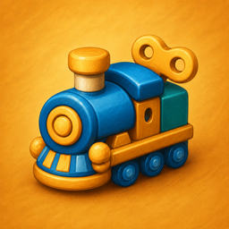

Game
ChuChu Train

선로 하나로, 칸칸이 전부.
ChuChu Train은 격자의 모든 칸을 하나의 끊김 없는 선로로 채우면서, 번호 순서대로 역을 지나는 한붓그리기 퍼즐이에요. 놀이방 원목 테이블 위 장난감 기차 세계관에, 레벨이 오를수록 새로운 선로 기믹이 하나씩 쌓여요.
App Store·Google Play 출시 예정.
레벨이 쌓일수록
고정 선로
단선 터널
석탄 보급소
고가 철교
장애물
새로운 규칙이 하나씩 늘어나요. 막히면 아이템으로 도움을 받을 수 있어요.